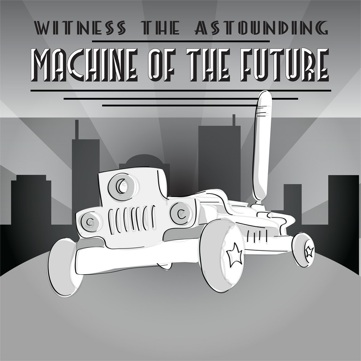

A Robot Tour Guide
We live in an age of technology-- an age in which communicating with a person half-way across the world is as easy as a few key strokes; an age in which our toilets flush themselves. We truly live in the World of Tomorrow. Given the futuristic backdrop against which we currently live our lives, human tour guides seem almost obsolete. Indeed, the warm, chipper tour guides of yesteryear have become a charming antique, replaced by the capable, professional, dashing, even hauntingly attractive Robot Tour Guide.
The mission for this magnificent mechanical man is simple: Autonomously direct the tour group from Point A to Point B. The Robot Tour Guide stores a map of the tour area internally. It places itself on that very map using its camera and space-age "artificial intelligence." This capability alone sets it lightyears ahead of your standard freshman tour guide. From there, you simply specify to the robot via its sleek user interface where you wish to go, and your wish is the Robot Tour Guide's command!
Welcome to the World of Tomorrow.